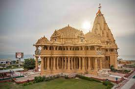

If you are dreaming of a vacation in paradise, Gujarat welcomes you – the land of rich history with culture, tradition and heritage. Gujarat is the 7th largest state in India, located in the western part of India. The vibrant Indian state Gujarat is the most attractive tourist destination for international and domestic travelers. You could travel to the incredible state of India for many reasons. The state is blessed with the diverse attractions such as historical monuments, world famous architecture, temples and exotic wildlife. The Big B Amitabh Bachchan is honoring the Gujarat Tourism as Brand ambassador. Come and get lost in ‘Khusboo Gujarat ki’.or.
Somnath : -Somnath Temple in Gujarat is one of the most sacred religious places for Hindu. This important pilgrimage destination is one of the twelve Jyotirlingas of Lord Shiva and people visit this temple as one of the place in Char Dham Yatra. As per the Hindu mythology Moon God known as Soma built this temple entirely with gold to pay reverence to the lord’s glory. Strategically located on the shores of Arabian Sea, the temple has been destroyed by many invaders and reconstructed number of occasions. Finally, the temple came into full pilgrimage destination after independence of India. Enjoying the status of top temples in India, each year millions of devotees seek blessings of Lord Shiva at Somnath.
Gir National Park (Home of Asiatic Lions): - The magic of vibrant Gujarat lies in its wildlife, majestic Asiatic lions, safaris, rocky hills and plenty of rivers that make it major tourist destinations of India. Gir National Park is the sole home for pure Asiatic lions, situated about 65 kilometers South East of the Junagarh districts in Gujarat. Sprawl over an area of 1412 square kilometers in the Saurastra region, the par was primarily dedicated to conserve the Asiatic lion. Gir has evolved as stable eco system due its richness of wide biodiversity with 600 different species of plants, 2000 species of insects and more than 36 species of mammals and over 300 species of reptiles. Dry deciduous forest which covers large tracts plays a vital role in keeping the climate moderate in this region.
Dwarkadhish Temple of Lord Krishna : -Welcome to most sacred place for Hindus around the world. Situated on the Gomti Creek, the finest temple of India believed to have been built by the grandson of Lord Krishna “King of Dwarka” himself. The temple is exclusively famous for its exquisitely carved architecture. It is said that Lord Krishna settled down in Dwarka with his Yadava (Yaduvanshi). Appearing to be rising from Arabian Sea, it is believed that the entire Dwarka Island was submerged in the sea & its recent architecture support this theory. More interestingly, the ancient Kingdom of Lord Krishna was the Capital of Gujarat state. The Krishna Janmastami festival celebration is the main attraction of Dwarkadhish.
Ahmedabad : -Ahmedabad is the fifth largest city in India and was the former capital city of the Indian state Gujarat. The city is blessed with the deep rooted rich culture, historical monuments, exquisite architecture and cheerful people. The city was founded by the king Karnadev in 11th century. As far as the tourists attraction in Ahmedabad is concerned it include Bhadra fort, temples, mosques, well-laid historical monuments and most important Mahatma Gandhi’s Ashram known as Sabarmati Ashram. The major attraction of the city that draws the attention of global tourists is the modern marvel Akshardham Temple in Gandhinagar. Maker Sakranti (Uttrayan) and Navratri are two most famous cultural festival that are celebrated with great zeal and passion.
Vadodara
Rajkot
Surat
Ahmedabad
Junagarh
Navsari
Anand